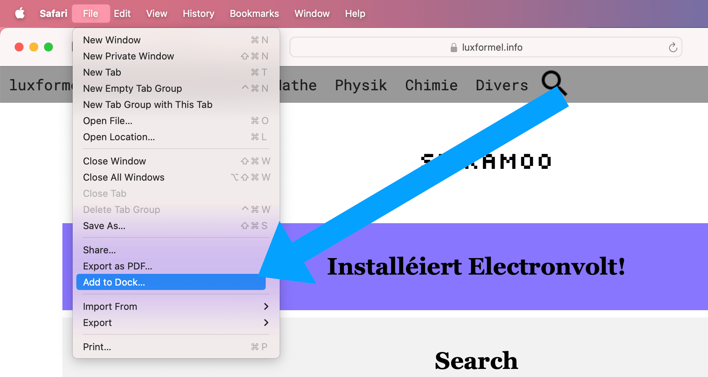
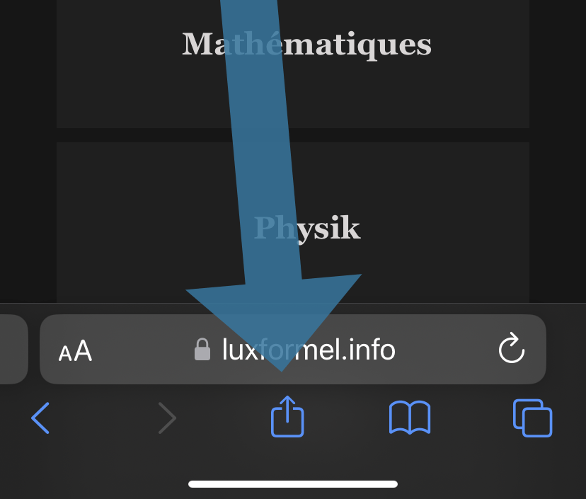
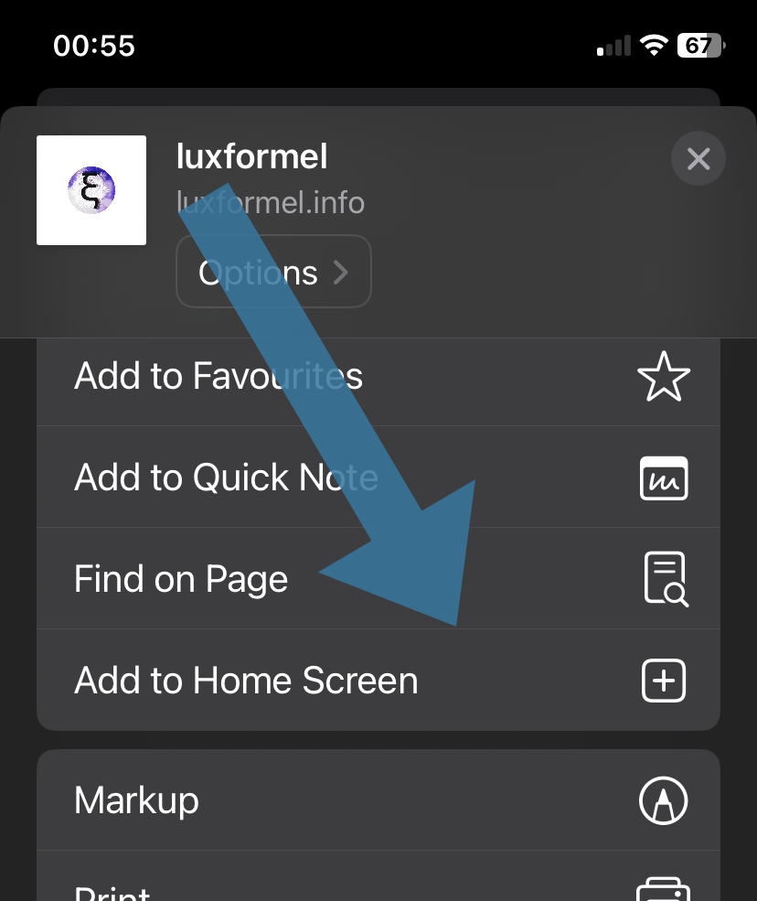
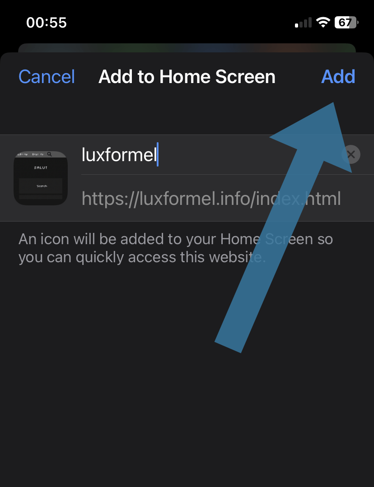
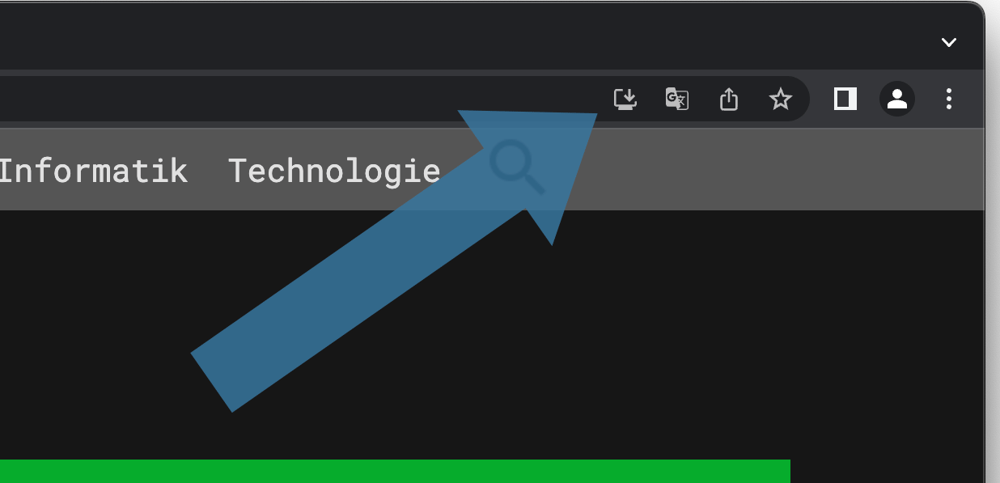
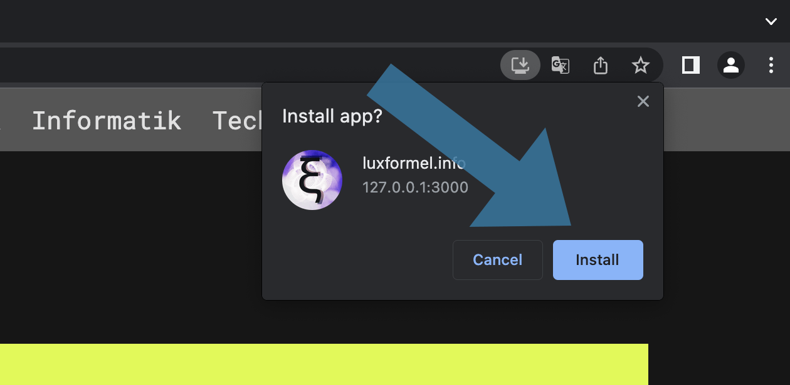

Luxformel ass och kompatibel als PWA (progressive web app), dat well
heeschen dass Dir Luxformel och kennt op Ärem Handy, Tablett oder
Computer installéieren. Installéieren an dem Fall heescht dass dir
d'Websäit als eng Zort installéiert Websäit op Ärem Apparat hutt.
Mac
Säit macOS 14.1 Sonoma, kënnt Dir ee Site am Dock späicheren. Ënne
gesinn Dir eng Foto vum Prozess. Dir musst just op File drécken an
dann op Add to Dock....

iPhone
Dréckt einfach ënnen op de Share-Knäppchen de bei Iech am Browser
misst ugewise ginn. Ënnen am Bild ass gewise wou sech de Knäppche
verstoppt am Safari Browser op engem iPhone, mä all OS oder Handy,
Tablett misst mat der Method kompatibel sinn.

Wann der op de Share-Knäppche gedréckt hutt misst de Share-Dialog
opdauchen. Hei dréckt der Add to Home Screen
oder änlech
genannte Funktiounen.

Dir kennt elo an engem zweete Schrëtt nach auswiele wéi dass der déi
u sech Bookmark
nenne wëllt. Dréckt da wéi hei Add
.

Computer
Luxformel ze installéieren ass ganz einfach! Dréckt einfach uewen op
den Download-Knäppchen de bei Iech am Browser misst ugewise ginn.
Ënnen am Bild ass gewise wou sech de Knäppche verstoppt an engem
Chrome Browser op engem Mac, mä all OS oder Computer misst mat der
Method kompatibel sinn.

Wann der op den Download-Knäppche gedréckt hutt misst eng Dialog-Box
opdauchen, déi Iech virschléit luxformel ze installéieren. Dréckt op
Install
.

D'luxformel PWA misst elo gedownloat sinn. Dir kennt elo luxformel
ouni Browser benotzen.